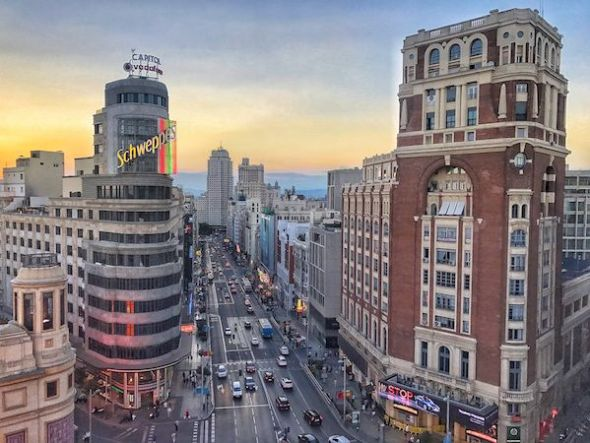
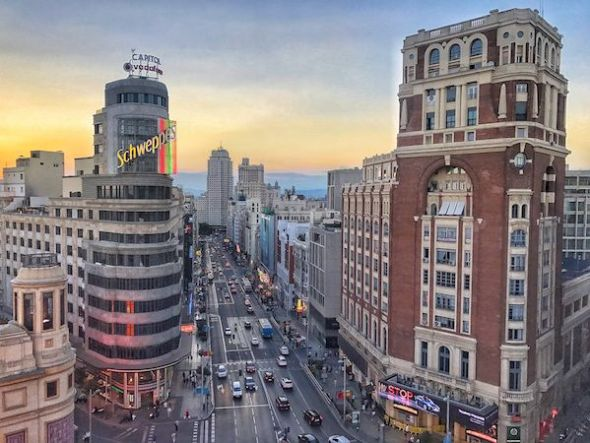

Filtro de Ciudades

Madrid
Barcelona
Roma
Paris

Filtro de Ciudades |
||
|---|---|---|
|
|
MadridBarcelona
|
RomaParis
|
|
Establece el umbral de rojo: 255 |
Establece el umbral de verde: 255 |
Establece el umbral de azul: 255 |
Poner el fondo gris OFF |
|---|